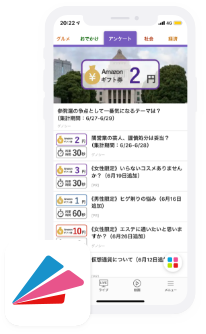

サービスメニューのご案内
OUTLINEサービス概要
“本当に自然な”アンケート調査の実現をサポート
Grill Researchなら、アンケート目的ではないパネラーにアンケート調査ができます。

情報感度の高いアクティブユーザーの生きた意見を収集できる「新しいカタチ = 正しいカタチ」の調査
アプリ内でニュースを見るために訪れる独自のモニターを保有しているため、幅広いタイプのユーザーから鮮度の高いアンケート結果を収集できるリサーチサービスです。
日本全国、幅広い世代の意見を短時間で収集できます
- グノシーアプリ上で直接収集！
- Gunosyのメディアサービス上のアンケートツールを活用し、各アプリのユーザーを対象にしたアンケート調査を行えます。
- 使い方は自由！
- 一般的な世論調査をはじめ、企業・ブランドのマーケティング調査や 広告の効果測定調査など、様々な目的や規模の調査が可能です。
- 累計5,000万DL超!
- 累計5,000万ダウンロードを誇る情報キュレーションメディアグノシーを軸としたアンケート調査で、日本全国の幅広い世代の意見を短時間で収集できます。
FEATUREサービス特徴
お気軽にご相談ください
お問い合わせCASE STUDIESケーススタディーズ
ケースの一例をご紹介します。ご予算に応じて様々な組み合わせが可能です。
- PLAN. A8万円で500名にアンケート
-
わずか2日で調査可能なシンプルプラン。
提案書やリリースなどへのデータ添付に効果的。- モニター数
- 500人
- 設問数
- 5問
- 調査日数
- 2日間
- 性別＆年齢のセグメント
- 可能
- PLAN. B15万円で500名にアンケート
-
設問を増やして、生活者の声を丁寧に聞くのに
案件に最適なプランです。- モニター数
- 500人
- 設問数
- 10問
- 調査日数
- 3日間
- 性別＆年齢のセグメント
- 可能
- PLAN. C25万円で500名にアンケート
-
特殊なターゲットのデータ取得プランもご用意。
詳細なフィルタリングをかけた調査が行えます。- モニター数
- 500人
- 設問数
- 10問
- 調査日数
- 2日間
- 性別＆年齢のセグメント
- 可能
- お好みのフィルタリング
- 可能
お気軽にご相談ください
お問い合わせSERVICE FLOWご利用の流れ
お気軽にご相談ください
お問い合わせ